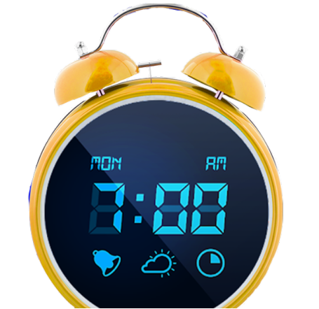

Simulira izlazak i zalazak Sunca.

Budilnik Sunce
Budilnik Sunce je okruglog oblika prečnika oko 20 centimetara u koji je integrisan led displej i zvučnik.
- Podešavanja izlazka i zalaska Sunca (tok od 10, 20, 30, 40, 50, 60 minuta)
- 10 tonova za budilnik + mogućnost personalizovanih zvuka
- Višenamensko svetlo
- Bluetooth povezivanje sa telefonom
- FM Radio
- Dizajnirano i proizvedeno u Srbiji
"Zdravlje je neprocenjivo bogatstvo. Investiraj u njega dok još možeš."
Vreme do isteka akcije:
00:00:00
Cena: 159€ 130€
+ poklon uz budilnik
NARUČI
Budite se odmorni i srećni svako jutro.
Budilnik ne remeti cirkadijalni ritam.
Personalizovan zvuk za budilnik.
Višenamensko svetlo za sve potrebe.
Pozitivno zadovoljstvo korisnika.
Aleksa Đurić
Cena je velika, ali vredi svaki dinar :)
Dragana Jović Popović
Odličan sat za one koji se bude rano!
Aleksa Spasić Aleksić
Stvarno sjajan sat!
Marko Momčilović
Od kad sam dobio od majke budilnik Sunce više ne kasnim u školu. #budilnikSunce
Podeli svoje mišljenje o budilniku Sunce.